Rohan Singh · GitHub README preview
Local-only preview. Animated SVGs are also embedded below as <img> elements.
hero · live <img>

about-life · live <img>

stack · live <img>

id-dashboard · live <img>

connect · live <img>

hero
hero · 0s hero · 2s
hero · 2s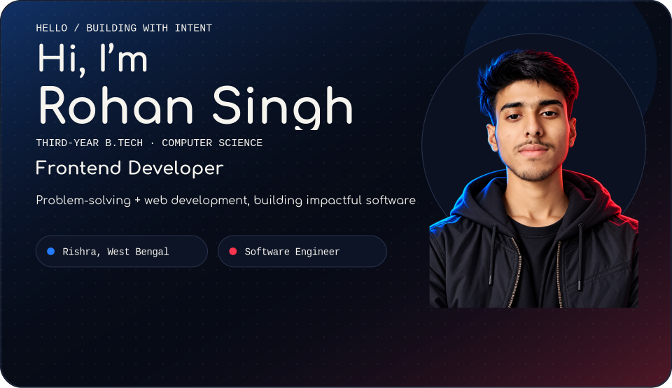
hero · 5shero · 9shero · 13s
hero · animation removed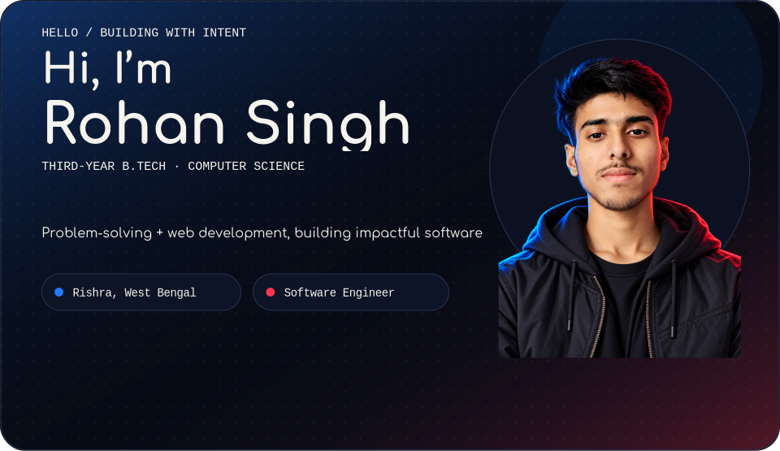
about-life
about-life · 0s about-life · 2s
about-life · 2s about-life · 5s
about-life · 5s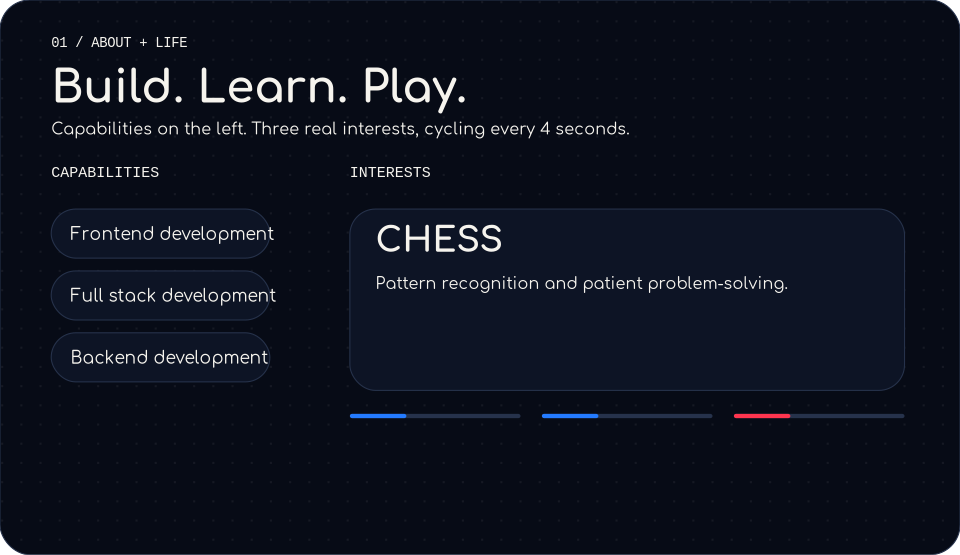
about-life · 9s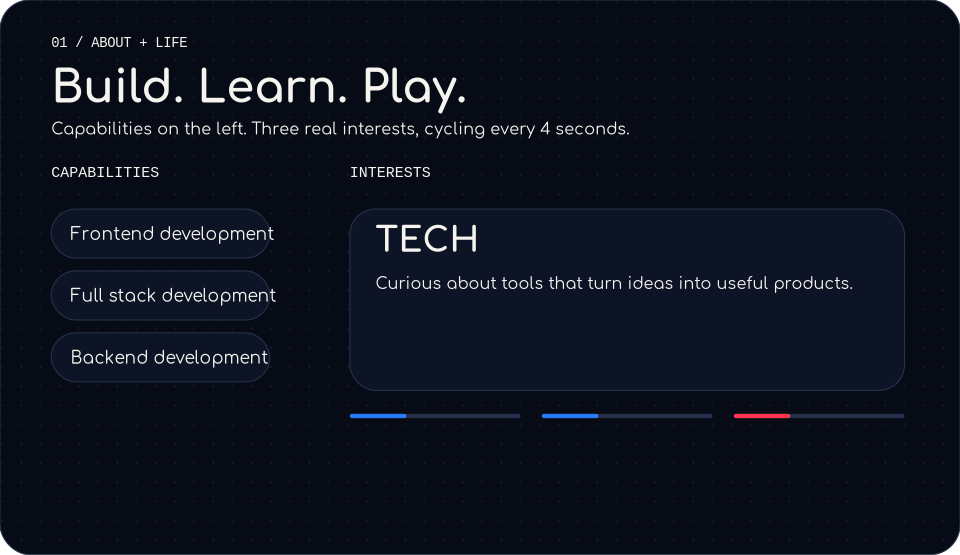
about-life · 13s
about-life · animation removed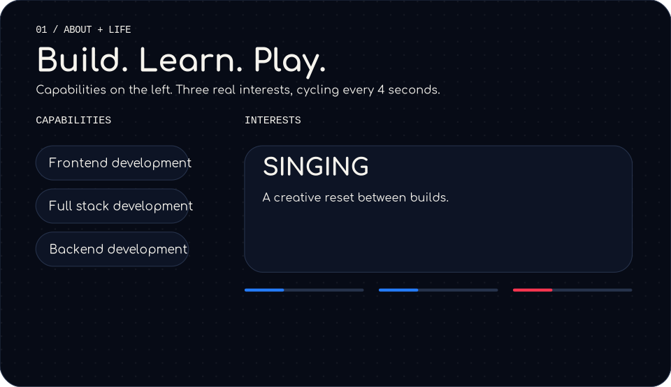
stack
stack · 0s stack · 2s
stack · 2s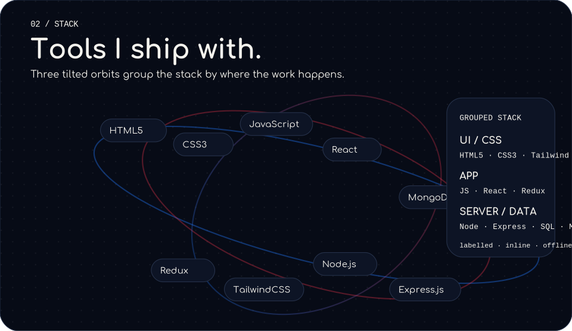
stack · 5s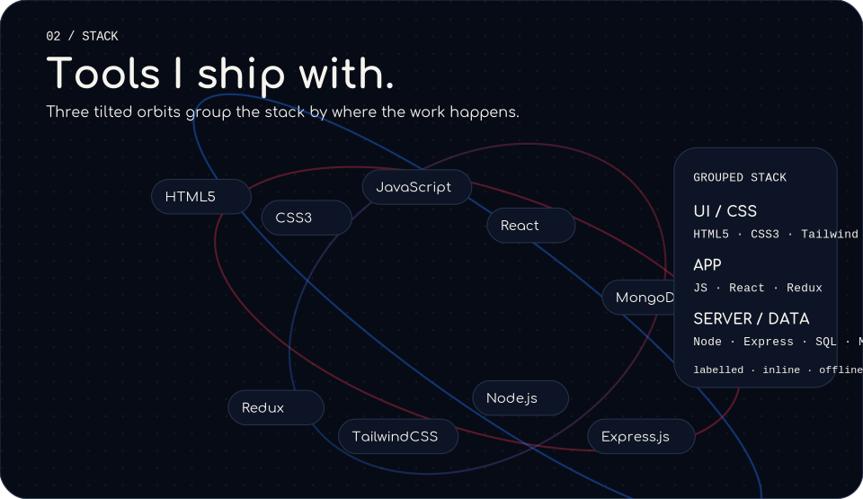
stack · 9s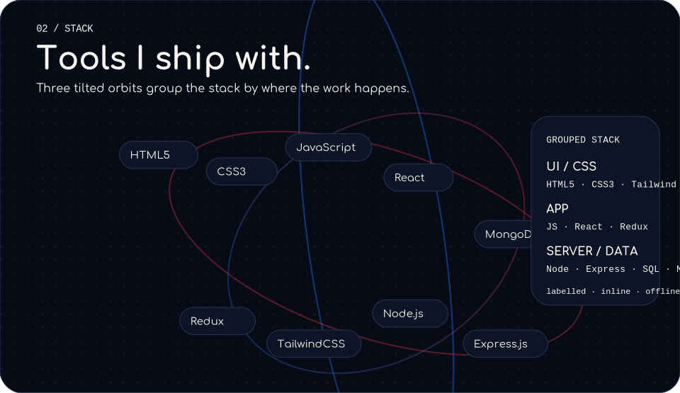
stack · 13s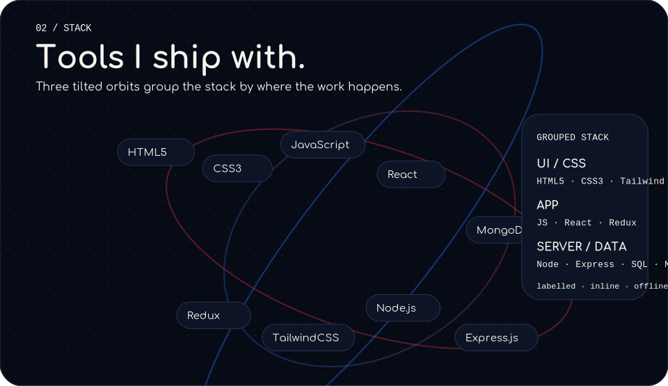
stack · animation removed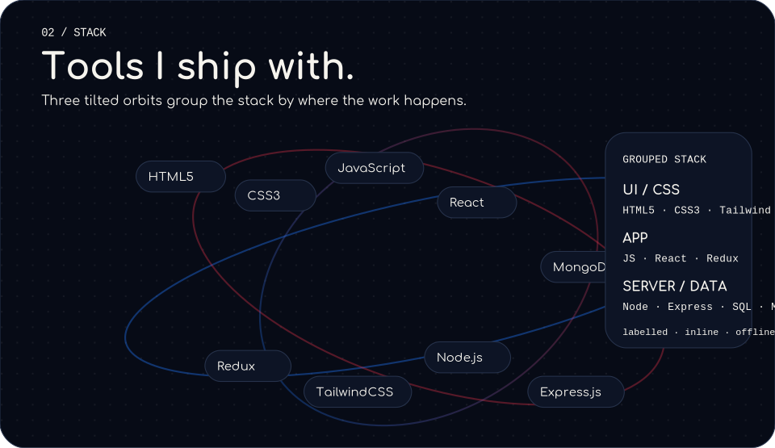
id-dashboard
id-dashboard · 0s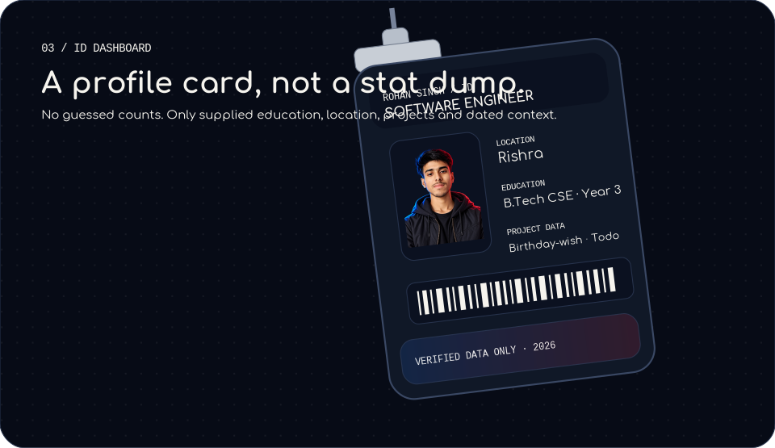
id-dashboard · 2sid-dashboard · 5s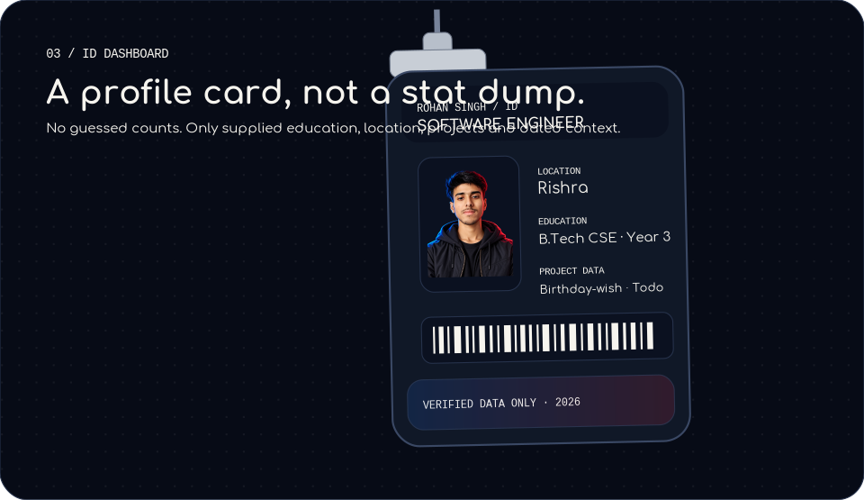
id-dashboard · 9sid-dashboard · 13s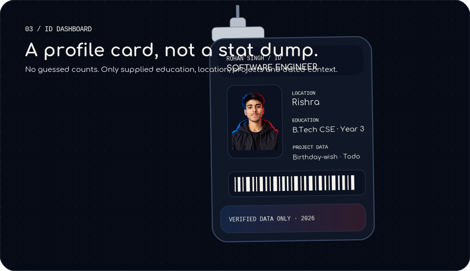
id-dashboard · animation removed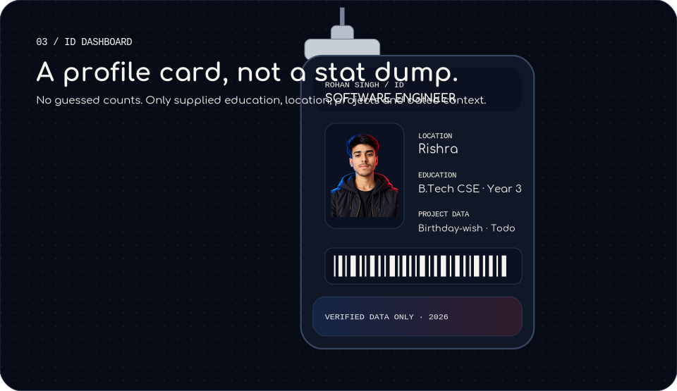
connect
connect · animation removed